Introduction to Supersonic Routing
David Marsh
2023-10-12
Source:vignettes/Supersonic_Routes.Rmd
Supersonic_Routes.RmdIntroduction
This vignette provides an end-to-end example of using the
himach package to find the quickest route for a supersonic
(“high Mach”) aircraft that is allowed to fly supersonic over sea, but
only subsonic over land.
#the libraries needed for the vignette are
library(himach)
library(dplyr, quietly = TRUE, warn.conflicts = FALSE)
library(ggplot2)
library(sf)
#> Linking to GEOS 3.10.2, GDAL 3.4.1, PROJ 8.2.1; sf_use_s2() is TRUE
library(s2)
library(rnaturalearthdata)
#> The legacy packages maptools, rgdal, and rgeos, underpinning the sp package,
#> which was just loaded, were retired in October 2023.
#> Please refer to R-spatial evolution reports for details, especially
#> https://r-spatial.org/r/2023/05/15/evolution4.html.
#> It may be desirable to make the sf package available;
#> package maintainers should consider adding sf to Suggests:.Aircraft
You need a dataframe that defines one or more aircraft. This needs, at minimum, to have the following fields:
-
idandtype: a very short, and longer text identifier for this aircraft -
over_sea_Mandover_land_M: two speeds, given as a Mach number -
accel_Mpm: acceleration in Mach per minute between these two -
arrdep_kph: the speed on arrival and departure from airport, given in km per hour -
range_km: range in km
Other fields are optional, but it is recommended to include
notes to give more information.
To convert between kph and Mach at the sort of cruise altitudes that
supersonic aircraft use, we use a fixed value
mach_kph=1062.
The cruise speeds over sea and over land are clearly intended to be
supersonic and subsonic, respectively. But this is not required. You
might want both subsonic, to include a comparator, subsonic aircraft. Or
you might want to have both supersonic, to explore routes when so-called
“mach cut-off” conditions prevail. himach doesn’t require
either speed to be within a particular range of values.
Run this minimum dataset through make_aircraft to get
the additional fields that are needed. Alternatively, if you run
make_aircraft with no parameters, it creates a set of test
aircraft. This test set is based on public data for 3 aircraft (though
the accel_Mpm, arrdep_kph are educated
guesses), and fantasy for the 4th one, which has been designed for
testing purposes and might not be pleasant to fly in.
make_aircraft adds some fields, converting Mach to kph,
and calculating the time to transition between the two speeds. This
‘transition penalty’ trans_h in hours, is used in the
routing search as a time penalty whenever a transition from subsonic to
supersonic (or vice versa) is needed; typically this is when switching
from flying over land to flying over sea (or vice versa).
# example for your own data - see above for column headings
# aircraft <- read.csv("data/aircraft.csv", stringAsFactors = FALSE)
# aircraft <- make_aircraft(aircraft)
# strongly recommended to record the source file name for later reference
# this works even better if your source file has a date embedded in the name
# attr(aircraft, "aircraftSet") <- "aircraft.csv"
# example if you have no data of your own - know that this will use default, so turn off warning
aircraft <- make_aircraft(warn = FALSE)Airports
Similarly, we need a dataset describing airports. This needs, at minimum, to have the following fields:
-
APICAO: the 4-character ICAO code for the airport -
longandlat: the longitude and latitude, in decimal degrees (E and N being positive)
Other fields are optional, but you might find it useful to include a
longer airport name ap_name to give more information, as
well as other fields containing geographical details, such as
country.
As with the aircraft, you can load your own data set and then run it
through make_airports to add a geo-coded field to it. If
you don’t have a list, then make_airports will use the
dataset from airportr package.
For this vignette, we use a very restricted set: just New Zealand. We
geocode the airports using a built-in coordinate reference system (CRS)
crs_Pacific; the maps will have the same.
# example for your own data
# airports <- read.csv("data/airports.csv", stringAsFactors = FALSE)
# airports <- make_airports(airports)
# example if you have no data of your own
airports <- make_airports(crs = crs_Pacific) %>%
filter(substr(APICAO, 1, 1)=="N") #just New Zealand, and neighbours
#> Using default airport data: airportr::airport.In fact you need two airport sets, because you need to say where
flights can stop to refuel. If an aircraft cannot make a journey in a
single leg, due to lack of range, himach automatically
searches for the best refuelling option. This can easily multiply the
number of searches by 5 or 10, so choose a limited number of likely
‘good’ options: islands, coastal points, or on narrow segments of land
where the aircraft would have to slow down anyway. In our theoretical
example, we have a test aircraft with an artificially-reduced range, and
we make just one refuel point available: coastal and central at the same
time, Wellington.
The refuelling dataset needs to be the same format as the full airports set. So easiest is to filter the airports set, or do an inner join if your refuelling list is a dataset read in from a file.
For the vignette, we’ll assume that Wellington has a long enough
runway. In fact himach does not currently check whether a
runway is long enough for the aircraft selected.
Maps
Next you need a set of shapefiles covering your area of interest (usually worldwide). These need only to distinguish land and sea, but starting off at country level can be useful, for example to filter out the Antarctic, which is not likely to see traffic. You can save time by ignoring airspace South of 60S, for example.
Finer resolution is better, because small islands can become larger
obstacles. After a no-fly coastal buffer, say around 30km wide, is
applied, even a 1km wide island is an obstacle 61km wide. There are some
useful starter maps in rnaturalearth (use the
countries versions), but you need to decide what is good
enough for your purposes. Two tests:
- If you have a 30km buffer do you have aircraft passing between Crete and mainland Greece without slowing down? Then you’re missing the island of Antikythera, famous for its ancient, analogue computer.
- With a 50km buffer, do you have routes passing supersonically between Taiwan and the Philippines? Then you are missing either Y’Ami or Xiao-lan Yu, which are just 98km apart.
Licensing and your intended use may influence which maps are available to you. We have used data from Eurostat in the past (at 1:1M scale, Eurostat country shape files). For the purpose of rapid testing and this vignette, we use a map which is provided by Stats NZ (as at January 2020) and licensed by Stats NZ for re-use under the Creative Commons Attribution 4.0 International licence.
In fact, we need two files: one is the basic outline of the land, largely used for visualisation; the second is derived from this, and adds a 30km buffer around the coastline to indicate the area where supersonic flight is not allowed. A different buffer is of course possible, 30km is about right for the expected radius of the footprint of the supersonic boom, but your expertise will determine what is needed.
Since the shape file is large, we provide a simplified outline
NZ_coast and also the buffer NZ_buffer30
within himach. These are in the original projection used by
Stats NZ. For global work, it’s strongly recommended to use one of the
following:
-
crs_Atlantic: “Robinson”, a mid 20C classic view, with Atlantic centre -
crs_Pacific: A Pacific-centred variant on this withcrs=sf::st_CRS("+proj=robin +lon_0=180 +x_0=0 +y_0=0 +ellps=WGS84 +datum=WGS84 +units=m +no_defs").
We leave this transformation step in the process to emphasise the need to think about which projection to use.
# if you are using your own shp file
# NZ_shp <- sf::read_sf("...../territorial-authority-2020-clipped-generalised.shp")
# NZ_coast <- NZ_shp %>% sf::st_simplify(dTolerance = 1000) %>% sf::st_union()
# NZ_buffer30 <- NZ_coast %>% sf::st_buffer(30 * 1000) %>% sf::st_union()
# get test datasets
NZ_coast <- hm_get_test("coast")
NZ_buffer30 <- hm_get_test("buffer")
# The in-built test maps are already in crs_Pacific
# All that remains is to illustrate the land and buffer
ggplot(NZ_buffer30) +
geom_sf(colour = NA, fill = "grey75") +
geom_sf(data = NZ_coast, fill = "grey90", colour = NA)+
theme_minimal()
# a quicker way to do all of this is to use map_routes, with no routes
# by default map_routes simplifies maps to a coarse 10km step
# for this small example we want something finer-grained
map_routes(NZ_coast, fat_map = NZ_buffer30, crs = crs_Pacific,
simplify_km = 2)
On the scale of this example, the resolution of the map is good. If
you are doing global analysis, then you will need two things: a detailed
map on which to base the coastal buffer (eg
rnaturalearthhires::countries10); and then a simplified
version, because otherwise plotting results will take a long time.
The version in comments in the chunk above uses the basic
sf functionality to simplify and buffer. For reasons that
we go into in
another vignette, it’s probably better to use s2 for
adding a buffer. That gives something like the following code (none of
which is used further in this vignette).
# you really want to use rnaturalearthhires::countries10
# but that's heavy for this vignette
map_NZ <- rnaturalearthdata::countries50 %>%
st_as_sf() %>%
filter(name == "New Zealand")
# use attributes to track where this came from
attr(map_NZ, "source") <- "rnaturalearthdata::countries50"
attr(map_NZ, "Antarctic") <- FALSE
attr(map_NZ, "simplify_m") <- NA
# using s2 for buffering
NZ_plus30 <- map_NZ %>%
st_as_s2() %>%
s2::s2_buffer_cells(distance = 30000, max_cells = 1000) %>%
st_as_sfc()
# again, use attributes to record the metadata
attr(NZ_plus30,"buffer_m") <- 30000
attr(NZ_plus30,"max_cells") <- 1000
# and then simplify for plotting
# just give 1 example here
map_NZ_2k <- map_NZ %>%
st_as_s2() %>%
s2::s2_simplify(tolerance = 2000) %>%
st_as_sfc()
attr(map_NZ_2k, "simplify_m") <- 2000
# example map, himach::map_routes but without any routes
# by default map_routes simplifies maps to a coarse 10km step
# for this small example we want something finer-grained
map_routes(map_NZ_2k, fat_map = NZ_plus30, crs = crs_Pacific,
simplify_km = 2)Create a grid
The route is constructed on a grid that covers the entire map. You
could think of this grid as being a regular network of waypoints and
route segments at some high, cruise flight level, though
himach doesn’t assign a flight level to it. The links in
this grid have nominal length: 30-40km appears sufficient, though we
will use a coarser grid for this test. By ‘nominal’ we mean that the
grid is constructed not on a strict distance basis, but between points
along particular lines of latitude, so the links vary in length.
To this are added connections to airports. These connections have a nominal or target length, say 150km, to represent the distance covered when accelerating to cruise speed, or decelerating back when landing. In practice, the length varies, because it depends on the (horizontal) distance from airport to grid.
It can take a very long time to construct a global grid. For our
much-reduced example the time might be 2-3 seconds. We wrap a
system.time call around the creation, to give some idea of
the timing. It’s roughly proportional to the square of
1/target_km, so if you halve the grid size, you double the
time.
Normally the grid is too large to plot helpfully, but in this very limited set, it can be visualised.
target_km <- 150
system.time(
p_grid <- make_route_grid(NZ_buffer30, "NZ lat-long at 150km",
target_km = target_km, classify = TRUE,
lat_min = -49, lat_max = -32,
long_min = 162, long_max = 182)
)
#>
#> user system elapsed
#> 1.983 0.040 2.023
# whether this map is useful depends on the target_km v the overall size of the map
ggplot(NZ_buffer30) +
geom_sf(colour = NA, fill = "grey75") +
geom_sf(data = NZ_coast, fill = "grey90", colour = NA) +
geom_sf(data = p_grid@lattice,
aes(geometry=geometry), colour="lightblue", size = 0.2) +
theme_minimal()Routes!
Finally we’re ready to do some routing of aircraft.
The result is a little coarse, because we have used a coarse grid.
himach simplifies sections of route to great circles where
it can, but all points where two great-circle segments join will be
vertices of this grid. You can experiment by using the built-in
NZ_grid instead. That has a 30km resolution, but is built
on the same NZ_buffer map, so nothing else needs to
change.
You can control the amount of reporting during the creation of routes
with the quiet option, cumulatively you get: 0) nothing, 1)
route & legs, 2) major stages (envelope, phases, shortcuts) 3) use
of cache, route stages & some timings.
options("quiet" = 4) #for some output
# from Auckland to Christchurch
ap2 <- make_AP2("NZAA","NZCH",airports)
# normally you do NOT want to do this, but for the vignette we
# work with an empty cache
hm_clean_cache()
routes <- find_route(aircraft[4,],
ap2,
fat_map = NZ_buffer30,
route_grid = p_grid,
ap_loc = airports)
#> Route:-NZAA<>NZCH----
#> Not cached: calculating...
#> Leg: NZAA<>NZCH Aircraft: Test-only SST
#> Starting envelope: 0
#> Cut envelope from lattice: 0.1
#> TOC/TOD not cached: calculating...
#> TOC/TOD not cached: calculating...
#> Got costed lattice: 0.3
#> Got path: 0.3
#> Calculated phase changes
#> Ready to recurse
#> transition 1. 2
#> sea 2. 2
#> transition 3. 4
#> Done recursion
#> Checking ShortcutsIn fact, normally you’ll want to run a selection of routes in one
batch. While find_route takes only one aircraft and one
airport-pair, there is a wrapper which takes a list of aircraft ids (as
in the first column in the aircraft data), and a 2-column matrix or
dataframe of 4-letter ICAO codes. It creates all combinations of these,
and runs find_route for each. This wrapper function is
called find_routes.
There is a progress bar, though this interacts with the progress messaging and the remaining time estimate tends to be too high because calculation speeds up as the cache fills up.
options("quiet" = 2) # anything more than 1 is messy, because of the progress bar
ap2 <- matrix(c("NZAA","NZCH","NZAA","NZDN","NZGS","NZCH"),
ncol = 2, byrow = TRUE)
ac <- aircraft[c(1,4), ]$id
routes <- find_routes(ac, ap2, aircraft, airports,
fat_map = NZ_buffer30,
route_grid = p_grid,
refuel = refuel_ap)
#> Route:-NZAA<>NZCH----
#> Leg: NZAA<>NZCH Aircraft: SST M2.2
#> Cut envelope from lattice: 0.1
#> Calculated phase changes
#> Done recursion
#> Checking Shortcuts
#>
#> Route:-NZAA<>NZDN----
#> Leg: NZAA<>NZDN Aircraft: SST M2.2
#> Cut envelope from lattice: 0.1
#> Calculated phase changes
#> Done recursion
#> Checking Shortcuts
#>
#> Route:-NZCH<>NZGS----
#> Leg: NZCH<>NZGS Aircraft: SST M2.2
#> Cut envelope from lattice: 0.1
#> Calculated phase changes
#> Done recursion
#> Checking Shortcuts
#>
#> Route:-NZAA<>NZCH----
#>
#> Route:-NZAA<>NZDN----
#> Too far for one leg.
#> Leg: NZAA<>NZWN Aircraft: Test-only SST
#> Cut envelope from lattice: 0.1
#> Calculated phase changes
#> Done recursion
#> Checking Shortcuts
#> Leg: NZDN<>NZWN Aircraft: Test-only SST
#> Cut envelope from lattice: 0.1
#> Calculated phase changes
#> Done recursion
#> Checking Shortcuts
#>
#> Route:-NZCH<>NZGS----
#> Leg: NZCH<>NZGS Aircraft: Test-only SST
#> Cut envelope from lattice: 0.1
#> Calculated phase changes
#> Done recursion
#> Checking Shortcuts
#> Once you have some routes, you will probably want (a) a summary of the routes created (b) a map. There are functions for both of these.
# create route summary
rtes <- summarise_routes(routes, airports)
# draw a basic map
map_routes(NZ_coast, routes, crs = crs_Pacific, fat_map = NZ_buffer30, simplify_km = 2)Maps are created with ggplot2 so the last map generated
can be saved with ggsave in the usual way.